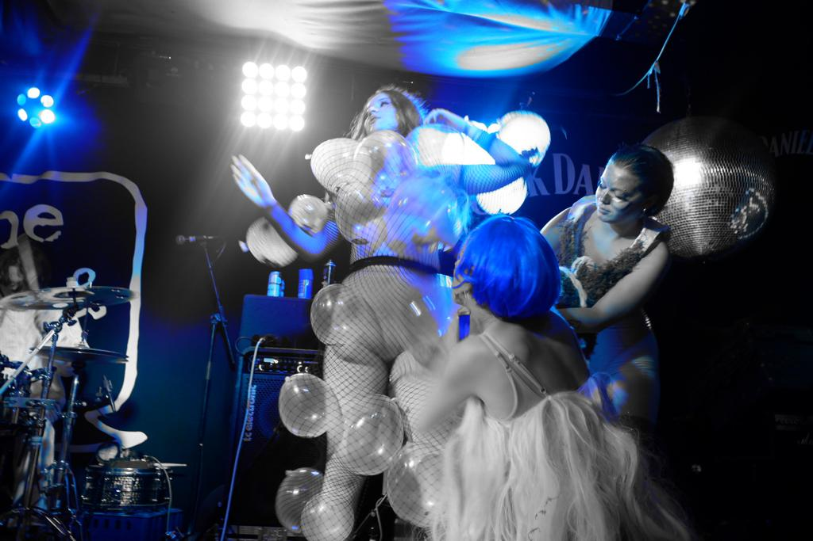

Alien Hairdresser, Mutations Festival, The Hope and Ruin
Alien Hairdresser was created and performed alongside Jade Zaheer and Amy Sheldon as Mischief in collaboration with band XVOTO for a performance at The Hope and Ruin as part of Mutations festival in Brighton.
Hard of Hearing Magazine South By South London: The Capital’s Finest Exports Shine at Brighton’s Mutations Festival, Lloyd Bolton
